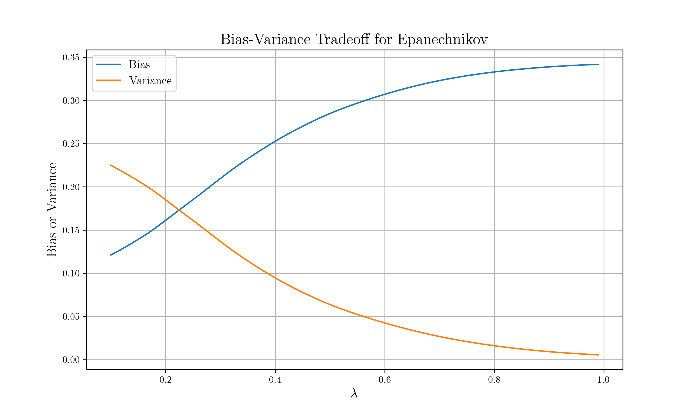
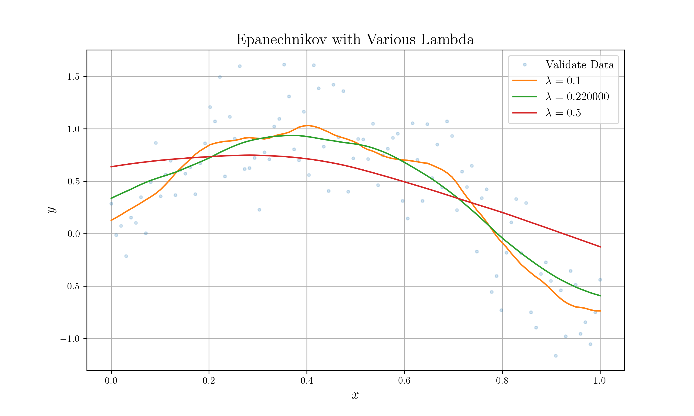
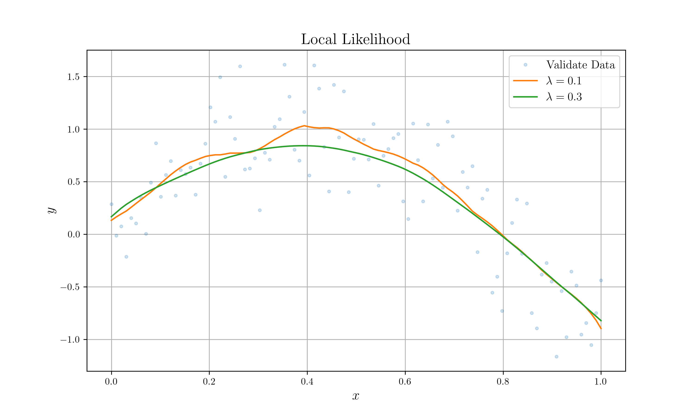
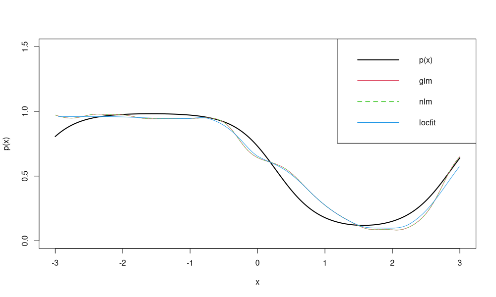
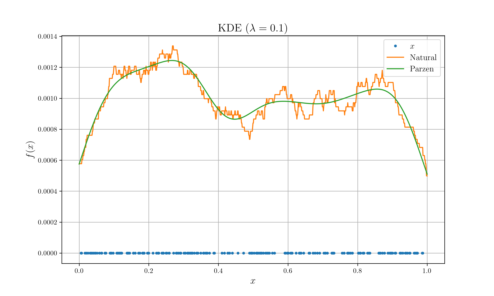

layout: true <div class="my-header"> <p class="align_left"><img src="images/yonsei_logo.png" style="height: 30px;"/></p> <p class="align_right"><b>Local likelihood & KDE</b>z</p> </div> <div class="my-footer"> <p class="align_right"><b>2021.10.05 ML Study</b></p> <p class="align_left"><b>Tae Geun Kim</b></p> </div> --- class: center, middle # Kernel Smoothing Method <h4 style="color:brown">Part 3 : Local likelihood & KDE</h4> <h3 style="color: darkblue">Tae Geun Kim</h3> --- ## Table of Contents -- * Bias - Variance Tradeoff in Kernel Smoothing -- * Local Likelihood -- * Kernel Density Estimation --- class: center, middle # Bias - Variance Tradeoff in Kernel Smoothing --- ### $\lambda$ in various kernel Kernel needs the parameter $\small \lambda$ which controls the window size. Generally, we can write kernel as follows: $$\small K\_\lambda(x\_0, x) = D \left( \frac{|x - x\_0|}{h\_\lambda(x\_0)} \right)$$ <br/> -- * Epanechnikov & Tri-cube : `\(\small \lambda -\)` radius of supported region -- * Gaussian : `\(\small \lambda -\)` standard deviation -- * kNN : `\(\small \lambda = k\)` --- ### Bias - Variance Tradeoff in $\lambda$ * If the window is narrow, `\(\small \hat{f}(x_0)\)` is an average of a small number of `\(\small y_i\)` close to `\(\small x_0\)`, and its variance will be relatively large—close to that of an individual `\(\small y_i\)`. The bias will tend to be small, again because each of the `\(\small E(y_i) = f(x_i)\)` should be close to `\(\small f(x_0)\)`. * If the window is wide, the variance of `\(\small \hat{f}(x_0)\)` will be small relative to the variance of any `\(\small y_i\)`, because of the effects of averaging. The bias will be higher, because we are now using observations `\(\small x_i\)` further from `\(\small x_0\)`, and there is no guarantee that `\(\small f(x_i)\)` will be close to `\(\small f(x_0)\)`. -- Therefore, * `\(\small \lambda \downarrow ~ \rightarrow ~ \text{Var}\uparrow,\,\text{Bias}\downarrow\)`, * `\(\small \lambda \uparrow ~ \rightarrow ~ \text{Var}\downarrow,\,\text{Bias}\uparrow\)`, --- ### Bias - Variance Tradeoff in $\lambda$ .center[  ] --- ### Bias - Variance Tradeoff in $\lambda$ .center[  ] --- class: center, middle # Local Likelihood --- ### Local Likelihood There are two major approaches to linear regression: -- * Least Squares (OLS) -- * Maximum Likelihood Estimation (MLE) -- Similarly, for local weighted regression, we can obviously use MLE. -- $$\begin{gathered} \hat{y}\_i = \theta(x\_i) = x\_i^T \hat{\beta} \\\\ \hat{\beta} = \underset{\beta}{\text{argmax}}\, \left\\{l(\beta(x\_0))\right\\} = \underset{\beta}{\text{argmax}}\, \left\\{\sum\_{i=1}^N K\_\lambda(x\_0, x\_i) l(y\_i,\,x\_i^T \beta(x\_0))\right\\} \end{gathered}$$ -- In general, we can write the local likelihood as $$l(\theta(z\_0)) = \sum\_{i=1}^N K\_\lambda (z\_0, z\_i) l(y\_i, \eta(x\_i, \theta(z\_0)))$$ --- ### Example: MLE for local linear regression Usual assumption for MLE of `\(\small \beta\)` in the linear model is $$Y|X \sim \mathcal{N}(\beta\_0 + \beta\_1 X, \sigma^2)$$ -- Then we can write the log likelihood as $$l(\mathbf{\beta}) = - \frac{1}{2\sigma^2} \sum\_{i=1}^N (y\_i - \beta\_0 - \beta\_1 x\_i)^2 + \text{const}$$ -- Similarly, we can write the local likelihood as $$l(\mathbf{\beta}(x\_0)) = - \sum\_{i=1}^N K\_\lambda(x\_0, x\_i)(y\_i - \beta\_0(x\_0) - \beta\_1(x\_0) x\_i)^2 + \text{const}$$ -- And we can find `\(\small \beta(x_0)\)` for each `\(\small x_0\)` via non-linear optimization. $$\hat{\beta}(x\_0) = \underset{\beta}{\text{argmax}}\, \left\\{l(\beta(x\_0))\right\\}$$ --- ### Example: MLE for local linear regression .center[  ] --- ### Example: MLE for local logistic regression .center[  ] --- class: center, middle # Kernel Density Estimation --- ### Kernel Density Estimation .center[  ] --- ### References * T. Hastie et al., *The Elements of Statistical Learning 2nd ed*, Springer (2009) * Eduardo García Portugués, *Notes for Nonparametric Statistics*, MSc in Statistics for Data Science at Carlos III University of Madrid (2021) --- class: center, middle # Thank you!